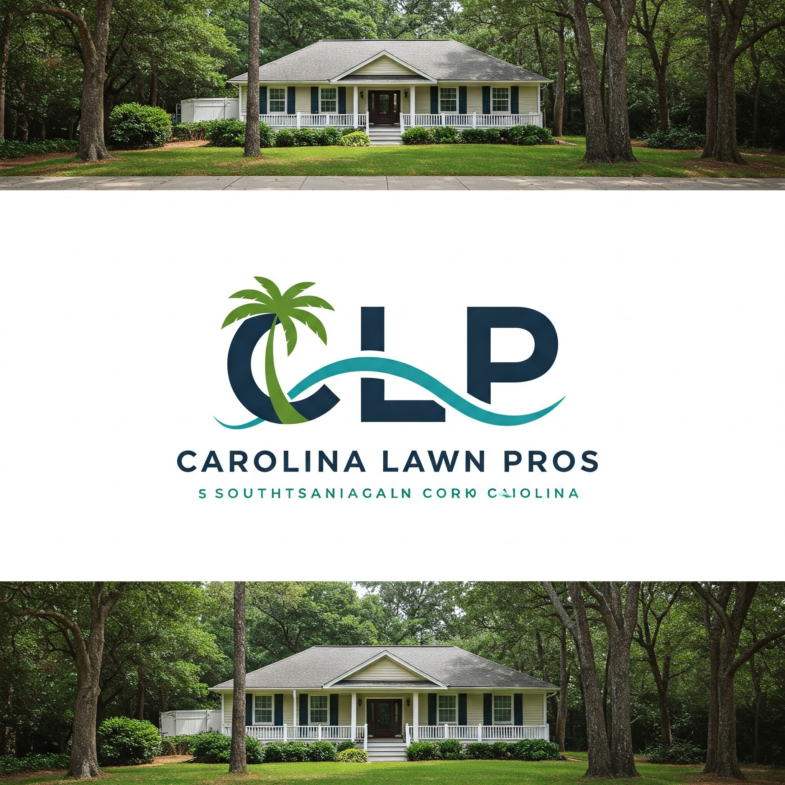
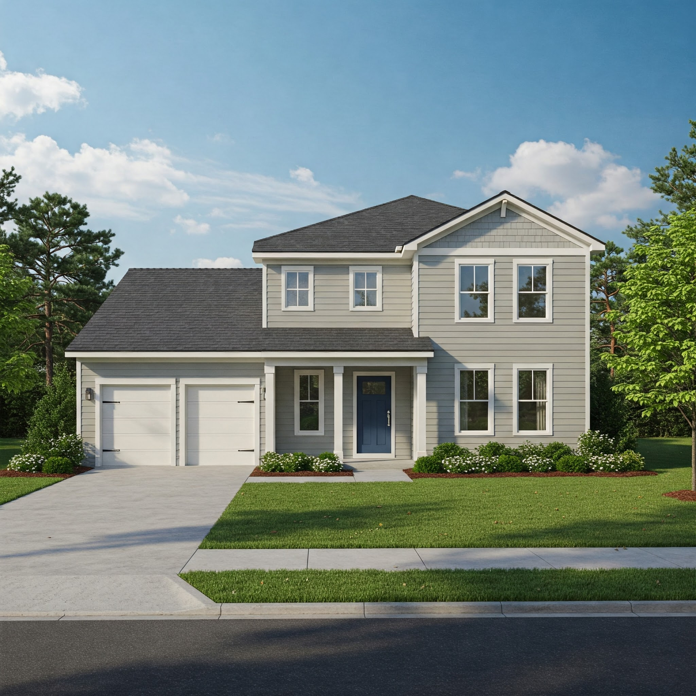
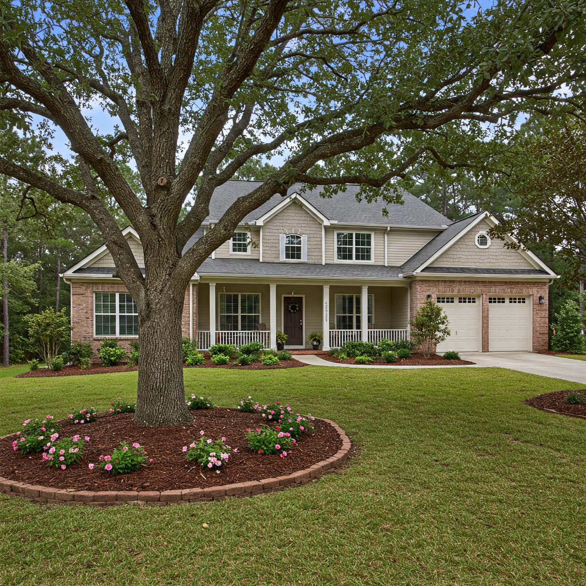

Local Landscaping Services

Lawn Care
Quality lawn mowing, fertilization, and weed control to maintain a healthy and attractive lawn in Brunswick County.

Garden Design
Custom garden design and planting services to create your ideal outdoor space in coastal North Carolina.

Hedge Trimming
Professional hedge shaping and shrub pruning services for neat and well-maintained properties throughout the region.

Hardscaping
Expert installation of patios, walkways, and retaining walls to enhance your outdoor living areas.